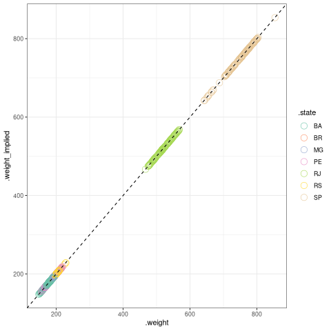
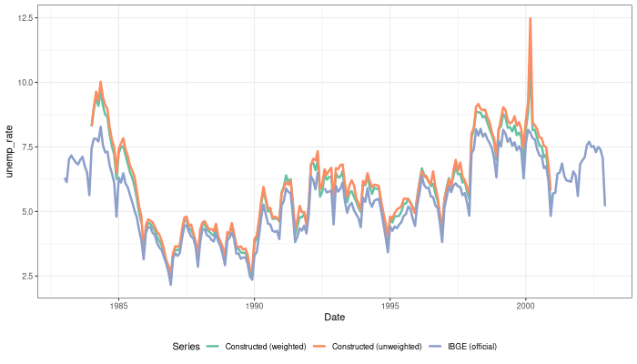

Documentation
Table of Contents
- 1. Dependencies
- 2. Building the old PME panel
- 3. Issues
- 3.1. Weird entries in PME 2000
- 3.2. Non-empty entries of V500 in PME 1999
- 3.3. Apparent impossibility of identifying person to household in PME99-2k
- 3.4. Weird values in column V10 for years 88-90
- 3.5. Month columns in persons datasets: availability and weird values
- 3.6. Malformed
V102in persons datasets - 3.7. Recycling of household IDs
- 3.8. Messy weights
- 3.9. Absent weights for 1984-1990
- 4. Tasks
1 Dependencies
- data.table
- zoo
- ggplot2
- lubridate
- github.com/pereiragc/dtsnippets
- glue
2 Building the old PME panel
2.1 Load data
Below is a convenience function for loading PME data into memory. You can specify unit to be “person”, “household”, or any other string (which will load both). The timeframe can be 80s, 90s or both (by again specifying any other string.)
.pme_dir <- "/home/gustavo/Dropbox/v2/data/PME/FullData" oldpmeread <- function(unit = "", timeframe = "", pme_dir = .pme_dir) { regex1 <- switch(unit, "person" = "person-", "household" = "household-", "(person|household)-") regex2 <- switch(timeframe, "80s" = "19(8.|90)", "90s" = "(199[1-9]|2000)", "(19[0-9]{2}|2000)") regex <- paste0(regex1, regex2) fff <- list.files(.pme_dir, pattern = regex, full.names = TRUE) ldata <- lapply(fff, function(fname) { rrr <- ".*(person|household)-([0-9]{4})\\.csv" ftype <- gsub(rrr, "\\1", fname) year <- as.integer(gsub(rrr, "\\2", fname)) DT <- data.table::fread(fname) DT[, .year := year] return(list( .year = year, .unit = ftype, DT = DT )) }) return(ldata) }
For the examples that show up later in this documentation, I have to load some files.
library(ggplot2) library(data.table) library(dtsnippets) ## For some examples hh95 <- fread(file.path(.pme_dir, "household-1995.csv")) pp95 <- fread(file.path(.pme_dir, "person-1995.csv")) pp_old <- rbindlist(lapply(oldpmeread("person"), function(ll) ll$DT), fill = TRUE) hh_old <- rbindlist(lapply(oldpmeread("household"), function(ll) ll$DT), fill = TRUE) 1
2.2 Checking for issues
2.2.1 Inferred states vs V10 vs UF
For years 1984-1990, state is present in column V10. The values were supposed to be
| State | Code |
|---|---|
| RJ | 11 |
| SP | 21 |
| RS | 33 |
| MG | 41 |
| PA | 56 |
| BA | 59 |
After 1990, the codes change to
| PE | Code |
|---|---|
| PE | 26 |
| BA | 29 |
| MG | 31 |
| RJ | 33 |
| SP | 35 |
| RS | 43 |
(The column name also changes to UF)
However, in 1988-1990 there are other values. Weird.
countby(hh_old[.year == 1988], .x = ".state", bycols = c("V10"))[[1]]
| V10 | .state = BA | .state = MG | .state = PE | .state = RJ | .state = RS | .state = SP |
|---|---|---|---|---|---|---|
| 11 | 0 | 0 | 0 | 103691 | 0 | 0 |
| 12 | 0 | 0 | 0 | 1345 | 0 | 0 |
| 13 | 0 | 0 | 0 | 497 | 0 | 0 |
| 14 | 0 | 0 | 0 | 854 | 0 | 0 |
| 21 | 0 | 0 | 0 | 0 | 0 | 102352 |
| 22 | 0 | 0 | 0 | 0 | 0 | 1062 |
| 23 | 0 | 0 | 0 | 0 | 0 | 343 |
| 24 | 0 | 0 | 0 | 0 | 0 | 558 |
| 25 | 0 | 0 | 0 | 0 | 0 | 606 |
| 26 | 0 | 0 | 0 | 0 | 0 | 335 |
| 27 | 0 | 0 | 0 | 0 | 0 | 105 |
| 28 | 0 | 0 | 0 | 0 | 0 | 429 |
| 33 | 0 | 0 | 0 | 0 | 83297 | 0 |
| 34 | 0 | 0 | 0 | 0 | 1775 | 0 |
| 35 | 0 | 0 | 0 | 0 | 1018 | 0 |
| 41 | 0 | 81771 | 0 | 0 | 0 | 0 |
| 42 | 0 | 915 | 0 | 0 | 0 | 0 |
| 56 | 0 | 0 | 66030 | 0 | 0 | 0 |
| 59 | 61414 | 0 | 0 | 0 | 0 | 0 |
Create a flag for that: note that oldpme_flag_bad_state has side-effects.
#' Flag bad state values. HAS SIDE EFFECTS ON `hh_old` oldpme_flag_bad_state <- function(hh_old, flagname = ".flbadstate") { valid_states_V10 <- c(11, 21, 33, 41, 56, 59) valid_states_UF <- c(26, 29, 31, 33, 35, 43) hh_old[!is.na(V10), (flagname) := !(V10 %in% valid_states_V10)] hh_old[!is.na(UF), (flagname) := !(UF %in% valid_states_UF)] }
Let’s check the extent of the problem:
oldpme_flag_bad_state(hh_old) countby(hh_old, .x = ".flbadstate", bycols = ".year")[[1]]
| .year | .flbadstate = FALSE | .flbadstate = TRUE |
|---|---|---|
| 1984 | 543788 | 0 |
| 1985 | 559749 | 0 |
| 1986 | 560980 | 0 |
| 1987 | 560825 | 0 |
| 1988 | 498555 | 9842 |
| 1989 | 414260 | 10093 |
| 1990 | 421895 | 10891 |
| 1991 | 445988 | 0 |
| 1992 | 449351 | 0 |
| 1993 | 447479 | 0 |
| 1994 | 436161 | 0 |
| 1995 | 447844 | 0 |
| 1996 | 463306 | 0 |
| 1997 | 471013 | 0 |
| 1998 | 481082 | 0 |
| 1999 | 481770 | 0 |
| 2000 | 489365 | 0 |
2.2.2 Inferred year vs ANO
hh_old[, .flag_inconsistent_year := ANO != .year ] pp_old[, .flag_inconsistent_year := ANO != .year ] tab_ano_hh <- countby(hh_old, .x = ".flag_inconsistent_year", bycols = ".year") tab_ano_pp <- countby(pp_old, .x = ".flag_inconsistent_year", bycols = ".year")
tab_ano_hh[[1]]
| .year | .flaginconsistentyear = NA | .flaginconsistentyear = FALSE |
|---|---|---|
| 1984 | 543788 | 0 |
| 1985 | 559749 | 0 |
| 1986 | 560980 | 0 |
| 1987 | 560825 | 0 |
| 1988 | 508397 | 0 |
| 1989 | 424353 | 0 |
| 1990 | 432786 | 0 |
| 1991 | 0 | 445988 |
| 1992 | 0 | 449351 |
| 1993 | 0 | 447479 |
| 1994 | 0 | 436161 |
| 1995 | 0 | 447844 |
| 1996 | 0 | 463306 |
| 1997 | 0 | 471013 |
| 1998 | 0 | 481082 |
| 1999 | 0 | 481770 |
| 2000 | 0 | 489365 |
tab_ano_pp[[1]]
| .year | .flaginconsistentyear = NA | .flaginconsistentyear = FALSE | .flaginconsistentyear = TRUE |
|---|---|---|---|
| 1984 | 1396109 | 0 | 0 |
| 1985 | 1390684 | 0 | 0 |
| 1986 | 1395301 | 0 | 0 |
| 1987 | 1395818 | 0 | 0 |
| 1988 | 1252766 | 0 | 0 |
| 1989 | 1061684 | 0 | 0 |
| 1990 | 1084312 | 0 | 0 |
| 1991 | 0 | 1096907 | 0 |
| 1992 | 0 | 1049652 | 0 |
| 1993 | 0 | 1058058 | 0 |
| 1994 | 0 | 1077149 | 0 |
| 1995 | 0 | 1084463 | 0 |
| 1996 | 0 | 1086939 | 0 |
| 1997 | 0 | 1099255 | 0 |
| 1998 | 0 | 1110199 | 0 |
| 1999 | 0 | 1100798 | 0 |
| 2000 | 0 | 995803 | 861 |
Conclusion. Overall, it seems that this is a minor problem
2.2.3 Month columns
I see two month columns:
| Mes da pesquisa | “mes de investigacao da pesquisa” | ||
|---|---|---|---|
| MES | 1991-2k | ||
| V105 | 1984-1990 | ||
| Mes de referencia | “mes da realizacao da pesquisa” | ||
| V2002 | 1984-2k |
A few notes:
V2002has no missing entries in the old pme sample:hh_old[, .(nna = sum(is.na(V2002)))]
nna 0 Same holds for
V105hh_old[, .(nna = sum(is.na(V105)))]
nna 0 Whenever MES and V105 are defined, they are equal:
hh_old[!is.na(MÊS), .(ndiff = sum(MÊS != V105))]
ndiff 0
Now, how do V105 and V2002 compare? Notes:
They’re definitely not the same:
hh_old[, sum(V105 != V2002, na.rm = TRUE)]x 569170 The difference only exists when the interview is conducted in the early days of the month (day of the month is variable
V2001)hh_old[V2002 != V105][, .N, V2001][order(-N)]
V2001 N 1 246123 2 187747 3 126451 4 8848 31 1 No idea why that 31st is there, probably an anomaly.
Conclusion. Use column V105 for the month to which the answers pertain, and V2002 for the month in which the research is conducted.
2.3 Combining person and household datasets: example of 1995
Note: see 3.3 for how the algorithm came about
First, just a quick wrapper for pasting a given set of columns with a dash; whenever one of the columns is missing, that invalidates the id.
generate_key <- function(dthh, keyvars = c("V10", "V101", "V102", "V103", "V106")) { vkey <- Reduce(function(x,y) paste(x, y, sep = "-"), dthh[, keyvars, with = FALSE]) vna <- Reduce(function(x,y) x | y, lapply(dthh[, keyvars, with = FALSE], is.na)) vkey[vna] <- NA_character_ return(vkey) }
So, for example,
hh95[, hhid := generate_key(.SD, c("UF", "V101", "V102", "V103", "V106"))] hh95[1:5, .(UF, V101, V102, V103, V106, hhid)] # show selected rows
| UF | V101 | V102 | V103 | V106 | hhid | |
|---|---|---|---|---|---|---|
| 1 | 31 | 14 | 310018 | 1 | 1 | 31-14-310018-1-1 |
| 2 | 31 | 31 | 310018 | 2 | 1 | 31-31-310018-2-1 |
| 3 | 31 | 49 | 310018 | 3 | 1 | 31-49-310018-3-1 |
| 4 | 31 | 66 | 310018 | 4 | 1 | 31-66-310018-4-1 |
| 5 | 31 | 83 | 310018 | 5 | 1 | 31-83-310018-5-1 |
This is the key for merging people and households
key2 <- c("UF", "MÊS", "V102", "V103")
Below I use hhid2 as merging key between person and household datasets, and include hhid in the people data.
hh95[, hhid2 := generate_key(.SD, key2)] pp95[, hhid2 := generate_key(.SD, key2)] pp95[hh95, hhid := hhid , on = "hhid2"] 1
Now let’s see what we got.
2.3.1 Sanity check: number of people in household
Let’s try some sanity checks on the merging procedure. In the household dataset, we observe the number of people in the household, as well as the number of people over 10 years old.
So we take three random households in the data:
set.seed(126) hh_sample <- pp95[, sample(unique(hhid), 3)] hh_sample
| 33-12-332127-1-4 |
| 29-45-29001030-9-3 |
| 43-12-432164-2-4 |
…and get the number of people in the household
hh95[ V109 > 0 ## avoid "bad" entries ][ hhid %in% hh_sample, .(number_people = V109[1], number_ppl_above10 = V110[1]), hhid][ order(hhid) ]
| hhid | numberpeople | numberpplabove10 |
|---|---|---|
| 29-45-29001030-9-3 | 5 | 3 |
| 33-12-332127-1-4 | 3 | 2 |
| 43-12-432164-2-4 | 2 | 1 |
Now let’s see the implied number of people based on the merge:
pp95[hhid %in% hh_sample, .(implied_n_people = length(unique(V201))), hhid][order(hhid)]
| hhid | impliednpeople |
|---|---|
| 29-45-29001030-9-3 | 3 |
| 33-12-332127-1-4 | 2 |
| 43-12-432164-2-4 | 1 |
2.4 Combining person and household pre-1990
The key to combine person and household is to use the columns (see 3.3):
| Column | Meaning | Availability 80s | Availability 90s |
|---|---|---|---|
| UF [.state] | household, person | household, person | |
| ANO [.year ] | year | household, person | household, person |
| MES [V(105)] | household | household, person | |
| V102 | survey area code | household | household, person |
| V103 | household number within survey area | household | household, person |
A few things to be decided:
- Which column to be used as month?
V105, probably?- Since only
V105shows up for persons dataset, there would be no hope if we usedV2002instead.
- Since only
- What about years <= 1990?
- We can take advantage of the fact that those years had the
household person person ...format, so that the line in the file (kept in variablen_entry) identifies people with a household record. - There are two ways of matching:
- Use the
n_entryvariable directly, or - Recover
V102andV103withn_entry, then use the key above to recover the household id.
- Use the
- We can take advantage of the fact that those years had the
First, set the household key in the household dataset (doing that for all years anyway):
keyhh <- c(".state", "V101", "V102", "V103", "V106") hh_old[, hhid := generate_key(.SD, keyhh)] 1
Below:
- use
n_entrywhen available to recoverV105,V102,V103,hhid.- theoretically, we would not need to go farther than this.
- however, I want to compare the
hhidobtained in such a way with the one obtained by generating the key
- So I generate the key that is used to merge people and households (which will be the method for 1991 onward)
- Finally, I use the person-household key to obtain another version of the household ID
pp_old[hh_old[!is.na(n_entry)], `:=`( V105m = V105, V102m = i.V102, V103m = i.V103, hhidx = hhid ), on = .(.state, .year, n_entry)] pp_old[, hh_pp_id := generate_key(.SD, c(".state", ".year", "V105m", "V102m", "V103m"))] hh_old[, hh_pp_id := generate_key(.SD, c(".state", ".year", "V105", "V102", "V103"))] pp_old[hh_old, hhidy := hhid, on = .(hh_pp_id)] 1
1
A few notes:
- since
V102exists in persons datasets after 1990, I have to usei.V102to indicate that I want the one coming fromhh_old. If I usedV102m = V102, I’d pull frompp_old, which would be a vector of missing values! - I append “x” to “hhid” because I will compare with another join method.
- The
n_entryidentifies rows only up to year and state (since there is a single file per year/state in the 1980s)
So: are the IDs the same?
pp_old[, .(different_ids_count = sum(hhidx != hhidy, na.rm = TRUE))]
| differentidscount |
|---|
| 0 |
YES!
2.5 Combining person and household for all old PME years
In this section, I use what I learned in the two prior sections to create a specific function that adds a key to join person/household to the datasets.
First, I remove the columns I created while exploring the keying in the above sections.
pp_old[, c("hh_pp_id", "hhidx", "hhidy", "V105m", "V102m", "V103m") := NULL] hh_old[, c("hh_pp_id", "hhid"):= NULL] 1
Let me try now to apply my combined wisdom:
I can easily create a household ID
hh_old[, hhid := generate_key(.SD, c(".state", "V101", "V102", "V103", "V106"))] 1
For
1984 <= yyyy <= 1990, I can simply use the entry number to recover household id in person dataset.pp_old[hh_old[!is.na(n_entry)], `:=`(hhid = hhid, V105 = V105), on = .(.state, .year, n_entry)] 1
As far as the new years are concerned, there is an issue with V102 documented in 3.6 that needs to be dealt with.
pp_old[!grepl("\\d{6,8}", V102), V102 := NA_character_] pp_old[, V102 := as.integer(V102)] 1
For the other years, I use the variables in 2.4 in order to fetch the id.
(In order for me to do that, I first have to match the column
V105name [MÊS => V105].)pp_old[is.na(n_entry), V105 := MÊS][] 1
pp_old[hh_old[is.na(n_entry)], hhid := i.hhid,
on = .(.year, .state, V105, V102, V103)]
1
2.5.1 Sanity check with number of people in household
dt_test <- hh_old[pp_old[, .(implied_n_people = length(unique(V201))), .(.year, hhid, V105)], .(hhid, nppl_gt10yo = V110, impl_nppl = implied_n_people), on = .(hhid, .year, V105)] dt_test[, sum(impl_nppl != nppl_gt10yo, na.rm= TRUE)]
2
Breaking down what I do above:
- For each (household ID, year, month) triple, I:
- Use “person” dataset to compute the implied number of people by going on that year/month/hhid and fetching the length of
V201[the “person number” column]- That becomes
impl_nppl
- That becomes
- Use the variable
V110from the household dataset which counts the number of people above 10 years old in the household in the year/month- That becomes
nppl_gt10yo
- That becomes
- Use “person” dataset to compute the implied number of people by going on that year/month/hhid and fetching the length of
- I then test for how many household IDs are
impl_npplandnppl_gt10yodifferent and find a single instance of that anomaly
2.6 Weights in PME
2.6.1 Fixing messy weights
The first thing I do is to come up with a function that tries to reasonably recover weights from messy data.
I take each state/year/month and select the “integer-like value” [see the regular expression in the function] that shows up most often.
oldpme_getweights <- function(pp_old) { # pp_old[, (newcname) := ifelse(grepl("^\\d+$", PESO), as.integer(PESO), NA)] dtw0 <- pp_old[!is.na(PESO), .(.w = as.integer(grep("^\\d+$", PESO, value = TRUE)), N = .N), .(.year, .state, V105)] dtw0[, .freq := .N, .(.year, .state, V105, .w)] anomalous_years <- paste(dtw0[.freq != N, unique(.year)], collapse = ", ") if (!(length(anomalous_years) == 0)) { message(glue::glue("[oldpme_getweights] Found anomalies in years: {anomalous_years}")) } dtw0[, .(.w = .w[which.max(.freq)]), .(.year, .state, V105)] }
Let’s see where that leads to different results relative to brute force conversion.
dtweights <- oldpme_getweights(pp_old)
pp_old[, PESOm := as.integer(PESO)]
dtweights[pp_old, on = .(.year, .state, V105)][PESOm != .w, .(PESOm = unique(PESOm)), .(.year, .state, V105, .w)]
| .year | .state | V105 | .w | PESOm |
|---|---|---|---|---|
| 2000 | BA | 3 | 190 | 4010 |
| 2000 | BA | 3 | 190 | 940 |
| 2000 | BA | 3 | 190 | 601248 |
| 2000 | BA | 3 | 190 | 751120190 |
| 2000 | BA | 3 | 190 | 1240 |
| 2000 | BA | 3 | 190 | 4 |
| 2000 | BA | 3 | 190 | 57 |
| 2000 | BA | 3 | 190 | 24560 |
| 2000 | BA | 3 | 190 | 501244 |
| 2000 | BA | 3 | 190 | 201240 |
| 2000 | BA | 3 | 190 | 74148 |
| 2000 | BA | 3 | 190 | 451014 |
| 2000 | BA | 3 | 190 | 17 |
| 2000 | BA | 3 | 190 | 201144 |
| 2000 | BA | 3 | 190 | 801248 |
| 2000 | BA | 3 | 190 | 200124 |
| 2000 | BA | 3 | 190 | 900093906 |
| 2000 | BA | 3 | 190 | 361116 |
| 2000 | BA | 3 | 190 | 136111 |
| 2000 | BA | 3 | 190 | 220124 |
| 2000 | BA | 3 | 190 | 0 |
| 2000 | BA | 3 | 190 | 222222222 |
| 2000 | BA | 3 | 190 | 180124 |
| 2000 | BA | 3 | 190 | 22 |
| 2000 | BA | 3 | 190 | 34 |
| 2000 | BA | 3 | 190 | 16 |
| 2000 | BA | 3 | 190 | 20 |
| 2000 | BA | 22 | 4 | 190 |
| 2000 | BA | 22 | 4 | 222222222 |
| 2000 | BA | 22 | 4 | 0 |
| 2000 | BA | 22 | 4 | 38 |
| 2000 | BA | 22 | 4 | 60104 |
| 2000 | BA | 22 | 4 | 220124 |
| 2000 | BA | 22 | 4 | 5 |
| 2000 | BA | 22 | 4 | 200124 |
| 2000 | BA | 22 | 4 | 45101 |
| 2000 | BA | 22 | 4 | 136114 |
| 2000 | BA | 22 | 4 | 8 |
| 2000 | BA | 22 | 4 | 900093906 |
| 2000 | BA | 22 | 4 | 6174204 |
| 2000 | BA | 22 | 4 | 64582 |
| 2000 | BA | 22 | 4 | 205482 |
| 2000 | BA | 22 | 4 | 150124 |
| 2000 | BA | 22 | 4 | 162622 |
| 2000 | BA | 22 | 4 | 75171584 |
| 2000 | BA | 22 | 4 | 64622 |
| 2000 | BA | 22 | 4 | 123403 |
| 2000 | BA | 22 | 4 | 342111 |
| 2000 | BA | 22 | 4 | 180124 |
| 2000 | BA | 22 | 4 | 184458972 |
| 2000 | BA | 22 | 4 | 799072 |
| 2000 | BA | 22 | 4 | 6033225 |
| 2000 | BA | 22 | 4 | 8454365 |
| 2000 | BA | 22 | 4 | 1424522 |
| 2000 | BA | 22 | 4 | 80 |
| 2000 | BA | 22 | 4 | 2 |
| 2000 | BA | 22 | 4 | 30036 |
| 2000 | BA | 22 | 4 | 1 |
| 2000 | BA | 22 | 4 | 600063 |
| 2000 | BA | 22 | 4 | 34 |
| 2000 | BA | 22 | 4 | 6 |
| 2000 | BA | 22 | 4 | 322300 |
| 2000 | BA | 22 | 4 | 2934 |
| 2000 | BA | 22 | 4 | 322400 |
| 2000 | BA | 190 | 2 | |
| 2000 | BA | 190 | 22 | |
| 2000 | BA | 190 | 222222222 | |
| 2000 | BA | 190 | 0 | |
| 2000 | BA | 190 | 16 | |
| 2000 | BA | 29 | 2 | 190 |
| 2000 | BA | 29 | 2 | 0 |
| 2000 | BA | 0 | 12120000 | 172120000 |
So it seems that everything comes down to Bahia, in March 2000, having many entries fixed…
I add the constructed weights to hh_old.
hh_old[dtweights, .weight := .w, on = .(.year, .state, V105) ]
1
2.6.2 Making sense of weights
Now, I want to test whether the construction of weights follows this quote:
Os pesos para expansão das amostras da PME são obtidos pela razão entre a estimativa de população residente e o total de moradores (V109) obtido na amostra da PME. O peso é único por região metropolitana e varia a cada mês de pesquisa.
(Free translation: “expansion weights = estimate of resident population / total of dwellers in sample [V109]; weights are unique by MSU and vary each survey month”)
dtnppl <- hh_old[, .(estimate_pop = unique(V600)[1], total_ppl_sample = sum(V109, na.rm = TRUE), .weight = .weight[1]), .(.year, .state, V105)] dtnppl[, .weight_implied := estimate_pop / total_ppl_sample] ggplot(dtnppl, aes(x = .weight, y = .weight_implied, colour = .state)) + geom_point(alpha = 0.8, shape = 1, size = 4) + scale_colour_brewer(palette = "Set2") + geom_abline(slope = 1, intercept = 0, linetype = 2) + theme_bw()

2.6.3 Reconciling post-90 weights with possible approach for pre-90
dtnppl[, d := zoo::as.yearmon(paste(.year, V105, sep = "-"))] ggplot(dtnppl[.state != "BR"], aes(x = d, y = total_ppl_sample, colour = .state)) + geom_line() + scale_colour_brewer(palette = "Set2") + theme_bw() + ylab("Number of people in surveyed households") + xlab("Month")
output/PME/people_in_sample.pdf
dt_tot <- dtnppl[, .(total = sum(total_ppl_sample)), .(d)] ggplot(dt_tot, aes(x = d, y = total)) + geom_line() + scale_colour_brewer(palette = "Set2") + theme_bw() + ylab("Number of people in surveyed households (all states)") + xlab("Month")
output/PME/people_in_sample_total.pdf
As expected, there is something happening with the number of people in the sample. I think the table from the documentation might make sense after all. For that reason, I try the following:
hh_old[.year <= 1990 & .state == "RJ", .weight := 200] hh_old[.year <= 1990 & .state == "SP", .weight := 300] hh_old[.year <= 1990 & .state == "RS", .weight := 100] hh_old[.year <= 1990 & .state == "MG", .weight := 100] hh_old[.year <= 1990 & .state == "PE", .weight := 100] hh_old[.year <= 1990 & .state == "BA", .weight := 100] 1
Note that with the weight and the nubmer of people in interviewed households, we can estimate back the population.
dtnppl[hh_old, .weight := i..weight, on =.(.year, .state, V105)] dtnppl[.year <= 1990, estimate_pop_pre90 := total_ppl_sample * .weight] pop_compare <- melt(dtnppl[, .(.state, d, estimate_pop, estimate_pop_pre90)], id.vars = c("d", ".state")) ggplot(pop_compare, aes(x = d, y = value, colour = .state, linetype = variable)) + geom_line() + scale_colour_brewer(palette = "Set2") + theme_bw()
What a miserable failure.
2.7 Age
PME stores “estimated ages” (when the respondent is not sure about birth year, or even about their age) in two different columns: V256 and V246.
Note that V246 is the same column that records the birth year of the person. Each entry of that column is supposed to be three characters, and whenever the three characters start with a zero [AND V206 = 00 AND V236 = 20 – which I don’t factor in below ], the number is suppoosed to represent a guess, either by the respondent or the interviewer.
V256 is described as “estimated age”, but lacks a full documentation. At the end of the day, if V246 results in a missing and we have something on V256, I use V256. If V246 and V256 are both defined, but disagree (which happen very very infrequently), I assign a missing value.
oldpme_ageestimate <- function(vday, vmonth, vyear, vage) { N <- length(vday) vyear_int <- as.integer(vyear) vmonth_int <- as.integer(vmonth) vday_int <- as.integer(vday) vyear_age_idx <- rep(FALSE, N) vyear_age_idx[!is.na(vyear_int) & vyear_int < 98] <- TRUE estimated_ages <- rep(NA, N) estimated_ages[vyear_age_idx] <- vyear_int[vyear_age_idx] estimated_ages2 <- as.integer(vage) estimated_ages2[!is.na(vage) & estimated_ages2 > 98] <- NA estimated_ages[is.na(estimated_ages)] <- estimated_ages2[is.na(estimated_ages)] ## Where the two ages differ, replace with NA estimated_ages[estimated_ages != estimated_ages2] <- NA return(list( estimated_ages )) }
The function below builds the birthday in each record.
oldpme_bday <- function(vday, vmonth, vyear) { built_date <- as.IDate( lubridate::fast_strptime(paste(paste0(1, vyear), vmonth, vday, sep = "-"), "%Y-%m-%d") ) }
The function below computes the age based on interview date and a vector of birth dates.
Let’s add them to our data.
pp_old[, .ageestimate := oldpme_ageestimate(V206, V236, V246, V256)]
pp_old[, .bdate := oldpme_bday(V206, V236, V246)]
1
Now, I recover interview day/month from the household dataset, and use that to compute an inferred age column.
pp_old[hh_old, .iviewdate :=
as.IDate(lubridate::fast_strptime(paste(.year, V2002, V2001,
sep = "-"),
format = "%Y-%m-%d")),
on = .(hhid, V105)]
pp_old[, .inferred_age := dtsnippets::age_calc(.bdate, .iviewdate),
.iviewdate]
The final work is to settle on a single workable age column. I do that below.
pp_old[.ageestimate == .inferred_age, .age := .inferred_age]
pp_old[is.na(.ageestimate) & !is.na(.inferred_age) &
.inferred_age < 98, .age := .inferred_age]
1
That basically does the following:
- When estimated age concurs with inferred age, use that
- When there is no estimated age, but there is inferred age, use inferred age, as long as inferred age is below 98 [people above 120yo who are currently attending school: we see you there! great achievement! but we’re not counting you in our sample…]
With that procedure, we get a total of 96.3306587637139 percent entries with a valid age.
2.8 Unemployment
Here I try to come up with a reasonable definition of unemployment, and will contrast the outcome with official statistics.
cc <- intersect(c(".PIA", "occup", "labor_force"), colnames(pp_old)) pp_old[, cc := NULL] pp_old[, .PIA := .age >= 10] pp_old[V301 %in% c(1,2), `:=`(occup = TRUE, labor_force = TRUE)] pp_old[V301 == 3, `:=`(labor_force = TRUE, occup = FALSE)] pp_old[V301 %between% c(5,7) & .PIA == TRUE, labor_force := (V313 == 1)] pp_old[V301 %between% c(5,7) & V313 == 1 & .PIA == TRUE, occup := FALSE] 1
What does the unemployment rate look like? Weighted and unweighted
dt_unemp_0 <- pp_old[, .(unemp = mean(!occup, na.rm=TRUE)), .(.state, .year, V105)] dt_unemp_0[hh_old, .weight := .weight, on = .(.state, .year, V105)] dt_unemp_0 <- dt_unemp_0[, .(`Constructed (weighted)` = mean(unemp * .weight, na.rm = TRUE) / mean(.weight, na.rm = TRUE), `Constructed (unweighted)` = mean(unemp, na.rm = TRUE)), .(.year, V105)] dt_unemp <- melt(dt_unemp_0, id.vars = c(".year", "V105"), value.name = "unemp_rate", variable.name = "Series") dt_unemp[, unemp_rate := 100 * unemp_rate] dt_unemp[, .SD[1:2] , Series]
| Series | .year | V105 | unemprate |
|---|---|---|---|
| Constructed (weighted) | 1984 | 1 | 8.29220007043393 |
| Constructed (weighted) | 1984 | 2 | 8.95364395454162 |
| Constructed (unweighted) | 1984 | 1 | 8.3092129972638 |
| Constructed (unweighted) | 1984 | 2 | 9.04511497777713 |
above, just an example of how it looks like… Now I download official unemployment data.
unemp_official <- melt(data.table::fread("docs/ibge-unemp.csv", colClasses = list(character = "Ano")), id.vars = "Ano") unemp_official[as.integer(Ano) %between% c(80, 99), Ano := paste0("19", Ano)] unemp_official[nchar(Ano) == 2, Ano := paste0("20", Ano)] unemp_official[, Ano := as.integer(Ano)] setnames(unemp_official, c("Ano", "variable", "value"), c(".year", "V105", "unemp_rate")) unemp_official[, Series := "IBGE (official)"] unemp_official[1:5]
| .year | V105 | unemprate | Series |
|---|---|---|---|
| 1983 | 1 | 6.3 | IBGE (official) |
| 1984 | 1 | 7.45 | IBGE (official) |
| 1985 | 1 | 6.31 | IBGE (official) |
| 1986 | 1 | 4.18 | IBGE (official) |
| 1987 | 1 | 3.19 | IBGE (official) |
Now I combine these two and plot!
dt_unemp_plot <- rbind(dt_unemp, unemp_official) dt_unemp_plot[, Date := zoo::as.yearmon(paste(.year, V105, sep = "-"))] dt_unemp_plot <- dt_unemp_plot[!is.na(Date)] ggplot(dt_unemp_plot, aes(x = Date, y = unemp_rate, colour = Series)) + geom_line(size = 1.2) + scale_colour_brewer(palette = "Set2") + theme_bw() + theme(legend.position = "bottom")

3 Issues
3.1 Weird entries in PME 2000
3.1.1 Issue
- In the
persondataset, variable V500 should be a blank line, but that fails to happen - Evidence: extract person dataset for year 2000 (from raw data), check out following lines of
PME2KBAP.TXT:31732
2920000329000920040111110808 8 017 032120000003801344 6 3955134211361742054 0000000501018 6114335 0310 000000190
- More than 137 characters (which should be max)
- Characters 115 to 128 should be blank, but instead we have “0000000501018 ”
35269
292060 34 4 0000329010920150135 0 90060 11111225963032401301041152 0003230322170 0 2 022 0000329010920150135 0 900602315 0202068138 1301041152 022 06 34 000000190
- Again, line is too large
- Year (chrs 3-6) is 2060
- again, garbage where there should be a blank space
3.1.2 Analysis
- Only happens in Bahia
- Happens in at least 13% of observations (so substantial for that (state,year) pair)
This is found via
library(data.table) pme_dir <- "/home/gustavo/Dropbox/v2/data/PME/FullData/" DT <- data.table::fread(file.path(pme_dir, "person-2000.csv")) DT[V500 != ""][, .N] / DT[.state == "BA"][,.N]
0.134287044701987
- note that
freadautomatically trims whitespaces, so this finds all instances in whichV500is different than whitespace
- note that
3.2 Non-empty entries of V500 in PME 1999
According to PME, the value of V500 should be all space characters; since fread trims whitespaces by default, and empty string is treated as missing, this means that V500 should be read as a column of missing values.
3.2.1 Analysis
That now happens across states
library(data.table) pme_dir <- "/home/gustavo/Dropbox/v2/data/PME/FullData/" DT <- data.table::fread(file.path(pme_dir, "person-1999.csv")) DT[, .(prop = sum(V500 != "") / .N), .state]
BA 0.0736372095514155 MG 0.167435718846132 PE 0.19549086573045 RJ 0.217595283567217 RS 0.190769608158068 SP 0.228151288335431 - However, the associated entries don’t seem (from eyeballing) too weird. For example, the weights associated with problematic entries are within the range of other entries (this is important because the weight entries come after
V500)
3.3 Apparent impossibility of identifying person to household in PME99-2k
The identifiers of households (at least according to Ribas and Soares, 2008) in the OLD PME is the following:
household id = V010 + V101 + V102 + V103 + V106
| Variable | Description | |
|---|---|---|
| v010 | UF | |
| v101 | Numero no 2.02/3.03 | “identifies selected household unit in listing instruments” |
| v102 | Numero de controle | “identifies survey area code” |
| v103 | numero de serie | “corresponds number of the household selected within each investigated area” |
| v106 | remessa | “identifies survey periods in accordance with ‘Periods for PME’ table; |
| codes 1-4 according to survey interview week“ |
However, variables V101, V106 aren’t not available on persons databases!
Of the variables above, only V10 [UF], V102 and V103 are available. But that is not sufficient to uniquely identify households:
## Create household IDs including / excluding V101 & V106 hh95[, `:=`(hhid1 = paste(UF, V101, V102, V103, V106, sep = "-"), hhid2 = paste(UF, V102, V103, sep = "-"))] hh95[, .(n_unique_id1 = length(unique(hhid1))), hhid2][, .(freq = .N), n_unique_id1]
| 3 | 17855 |
| 4 | 18444 |
| 2 | 274 |
| 1 | 39158 |
| 5 | 652 |
| 6 | 18 |
Above shows that there are 17855 instances of hhid2 (i.e., the one excluding V101 and V106) that match with 3 hhid1.
However, looking at some examples, e.g., hhid2 = 35-352012-2, we see
hh95[hhid2 == "35-352012-2", .(hhid1 = unique(hhid1)), hhid2]
| hhid2 | hhid1 |
|---|---|
| 35-352012-2 | 35-19-352012-2-1 |
| 35-352012-2 | 35-20-352012-2-1 |
| 35-352012-2 | 35-21-352012-2-1 |
In the example above, the hhid2 is associated with three hhid1; however, if we look at more columns,
hh95[hhid2 == "35-352012-2", .(UF, ANO, MÊS, hhid1, hhid2)]
| UF | ANO | MÊS | hhid1 | hhid2 |
|---|---|---|---|---|
| 35 | 1995 | 1 | 35-19-352012-2-1 | 35-352012-2 |
| 35 | 1995 | 2 | 35-19-352012-2-1 | 35-352012-2 |
| 35 | 1995 | 3 | 35-19-352012-2-1 | 35-352012-2 |
| 35 | 1995 | 4 | 35-19-352012-2-1 | 35-352012-2 |
| 35 | 1995 | 5 | 35-20-352012-2-1 | 35-352012-2 |
| 35 | 1995 | 6 | 35-20-352012-2-1 | 35-352012-2 |
| 35 | 1995 | 7 | 35-20-352012-2-1 | 35-352012-2 |
| 35 | 1995 | 8 | 35-20-352012-2-1 | 35-352012-2 |
| 35 | 1995 | 9 | 35-21-352012-2-1 | 35-352012-2 |
| 35 | 1995 | 10 | 35-21-352012-2-1 | 35-352012-2 |
| 35 | 1995 | 11 | 35-21-352012-2-1 | 35-352012-2 |
So the entries under hhid2 seem to be ordered by month.
Now, is it true that within a month, hhid2 and hhid1 identify the same household?
hh95[, .(n_unique_id1 = length(unique(hhid1))), .(MÊS, hhid2)][, .N, n_unique_id1]
| nuniqueid1 | N |
|---|---|
| 1 | 447844 |
Bingo! At least for 1995, this seems to hold. Let’s check more generally (this might take ~60 seconds):
years_check <- list.files(pme_dir, pattern = "household-(199[1-9]|2000)", full.names = TRUE) hh_all <- rbindlist(lapply(years_check, data.table::fread)) hh_all[, hhid1 := paste(UF, V101, V102, V103, V106, sep = "-")] hh_all[, hhid2 := paste(UF, MÊS, V102, V103, sep = "-")] hh_all[, .(n_unique_id1 = length(unique(hhid1))), .(ANO, hhid2)][, .N, .(ANO, n_unique_id1)]
| ANO | nuniqueid1 | N |
|---|---|---|
| 1991 | 1 | 445988 |
| 1992 | 1 | 449351 |
| 1993 | 1 | 447479 |
| 1994 | 1 | 436161 |
| 1995 | 1 | 447844 |
| 1996 | 1 | 463306 |
| 1997 | 1 | 471013 |
| 1998 | 1 | 481082 |
| 1999 | 1 | 481770 |
| 2000 | 1 | 489365 |
Note that I included MÊS (month) in hhid2, and now we get an ID that is finer than hhid1! In fact, the above computation was unnecessary, because hhid2 identifies entries of the household dataset uniquely:
hh_all[, .(nobs = .N), .(hhid2, ANO)][, .(freq = .N), .(nobs, ANO)]
| nobs | ANO | freq |
|---|---|---|
| 1 | 1991 | 445988 |
| 1 | 1992 | 449351 |
| 1 | 1993 | 447479 |
| 1 | 1994 | 436161 |
| 1 | 1995 | 447844 |
| 1 | 1996 | 463306 |
| 1 | 1997 | 471013 |
| 1 | 1998 | 481082 |
| 1 | 1999 | 481770 |
| 1 | 2000 | 489365 |
Interpreted as: “for each ANO, there is a single entry per hhid2”
3.4 Weird values in column V10 for years 88-90
countby(hh_old[.year %in% c(1988, 1989, 1990)], .x = ".state", bycols = c("V10"))[[1]]
| V10 | .state = BA | .state = MG | .state = PE | .state = RJ | .state = RS | .state = SP |
|---|---|---|---|---|---|---|
| 11 | 0 | 0 | 0 | 273526 | 0 | 0 |
| 12 | 0 | 0 | 0 | 3986 | 0 | 0 |
| 13 | 0 | 0 | 0 | 1559 | 0 | 0 |
| 14 | 0 | 0 | 0 | 2424 | 0 | 0 |
| 21 | 0 | 0 | 0 | 0 | 0 | 272683 |
| 22 | 0 | 0 | 0 | 0 | 0 | 3228 |
| 23 | 0 | 0 | 0 | 0 | 0 | 985 |
| 24 | 0 | 0 | 0 | 0 | 0 | 1669 |
| 25 | 0 | 0 | 0 | 0 | 0 | 1714 |
| 26 | 0 | 0 | 0 | 0 | 0 | 847 |
| 27 | 0 | 0 | 0 | 0 | 0 | 344 |
| 28 | 0 | 0 | 0 | 0 | 0 | 1006 |
| 29 | 0 | 0 | 0 | 0 | 0 | 333 |
| 33 | 0 | 0 | 0 | 0 | 222620 | 0 |
| 34 | 0 | 0 | 0 | 0 | 5439 | 0 |
| 35 | 0 | 0 | 0 | 0 | 3651 | 0 |
| 41 | 0 | 223409 | 0 | 0 | 0 | 0 |
| 42 | 0 | 3099 | 0 | 0 | 0 | 0 |
| 56 | 0 | 0 | 176931 | 0 | 0 | 0 |
| 59 | 165541 | 0 | 0 | 0 | 0 | 0 |
| 60 | 542 | 0 | 0 | 0 | 0 | 0 |
3.5 Month columns in persons datasets: availability and weird values
Let’s create a variable that flags whether month (as in V105, not V2002) is:
- Within reasonable range
- NA
- Outside reasonable range
pp_old[MÊS %in% seq(1, 12), .flmonth := 0 ] pp_old[is.na(MÊS), .flmonth := 1 ] pp_old[is.na(.flmonth), .flmonth := 2] # none of the above countby(pp_old, ".flmonth", ".year")[[1]]
| .year | .flmonth = 0 | .flmonth = 1 | .flmonth = 2 |
|---|---|---|---|
| 1984 | 0 | 1396109 | 0 |
| 1985 | 0 | 1390684 | 0 |
| 1986 | 0 | 1395301 | 0 |
| 1987 | 0 | 1395818 | 0 |
| 1988 | 0 | 1252766 | 0 |
| 1989 | 0 | 1061684 | 0 |
| 1990 | 0 | 1084312 | 0 |
| 1991 | 1096907 | 0 | 0 |
| 1992 | 1049652 | 0 | 0 |
| 1993 | 1058058 | 0 | 0 |
| 1994 | 1077149 | 0 | 0 |
| 1995 | 1084463 | 0 | 0 |
| 1996 | 1086939 | 0 | 0 |
| 1997 | 1099255 | 0 | 0 |
| 1998 | 1110199 | 0 | 0 |
| 1999 | 1100798 | 0 | 0 |
| 2000 | 995819 | 35 | 810 |
So we conclude that, in the case of person data:
- In years <= 1990, there is no month column (=> need to be recovered from household data)
- In years 91-2k, there are minor issues, but probably not worth losing sleep over 845 observations.
Also worth noting that in household data,
V105~/~MÊSare all “reasonable”:countby(hh_old, .x = "MÊS", bycols = "V105")[[1]]
V105 MÊS = NA MÊS = 1 MÊS = 2 MÊS = 3 MÊS = 4 MÊS = 5 MÊS = 6 MÊS = 7 MÊS = 8 MÊS = 9 MÊS = 10 MÊS = 11 MÊS = 12 1 300087 382847 0 0 0 0 0 0 0 0 0 0 0 2 301355 0 383297 0 0 0 0 0 0 0 0 0 0 3 303433 0 0 383251 0 0 0 0 0 0 0 0 0 4 303617 0 0 0 384004 0 0 0 0 0 0 0 0 5 306035 0 0 0 0 384469 0 0 0 0 0 0 0 6 305578 0 0 0 0 0 384447 0 0 0 0 0 0 7 306055 0 0 0 0 0 0 384388 0 0 0 0 0 8 292009 0 0 0 0 0 0 0 384413 0 0 0 0 9 293006 0 0 0 0 0 0 0 0 384251 0 0 0 10 293008 0 0 0 0 0 0 0 0 0 385446 0 0 11 293209 0 0 0 0 0 0 0 0 0 0 385811 0 12 293486 0 0 0 0 0 0 0 0 0 0 0 386735
3.6 Malformed V102 in persons datasets
In old PME, variable V102 is necessary to merge people and households, and to identify households / people over time.
In pme1991-2000.doc, variable V102 has the following description:
Identifica o código da área de pesquisa. Até 11/1995, o número de controle possuía 6 dígitos. A partir daí, passou a ter 8 dígitos. Para compatibilização com as pesquisas mais novas, tornando possível apenas uma descrição do registro num programa de acesso aos dados, o número de controle com 6 dígitos recebe dois espaços após o mesmo, ficando com 8 posições, mantendo-se o mesmo lay-out do registro, independente do ano.
Note that we do see that pattern:
hh_old[.year <= 1994, .(number_digits = unique(nchar(as.character(V102))))]
| numberdigits |
|---|
| 6 |
hh_old[.year >= 1996, .(number_digits = unique(nchar(as.character(V102))))]
| numberdigits |
|---|
| 8 |
Of course, 1995 should have both types (due to staggered waves). HOwever, in the person dataset, it’s kinda horrible.
data.table::freadreads the column as character, indicating something wrong.pp_old[, typeof(V102)]
integer
A regular expression shows entries without proper format:
n_proper <- pp_old[grepl("\\d{6,8}", V102), .N] n_non_na <- pp_old[!is.na(V102), .N] n_proper/n_non_na
0.999998698885242
nearly all of the dataset has the proper format. I create a function to flag that.
oldpme_flag_V102 <- function(pp_old) { pp_old[is.na(V102), .fl102 := 1] pp_old[!is.na(V102), .fl102 := ifelse(grepl("\\d{6,8}", V102), 0, 2)] }
Here is the flag documentation:
| Flag | Meaning |
|---|---|
| 0 | Non-missing V102 with proper format |
| 1 | NA V102 |
| 2 | Non-missing V102 with improper format |
3.7 Recycling of household IDs
Let’s examine the household identified with hhid “MG-142-411930-10-3”:
hh_old[hhid == "MG-142-411930-10-3",
.(hhid, .state, day = V2001, month = V2002, year = .year,
npeople = V109, npeople_gt10yo = V110)]
| hhid | .state | day | month | year | npeople | npeoplegt10yo |
|---|---|---|---|---|---|---|
| MG-142-411930-10-3 | MG | 16 | 11 | 1986 | 2 | 2 |
| MG-142-411930-10-3 | MG | 21 | 12 | 1986 | 2 | 2 |
| MG-142-411930-10-3 | MG | 25 | 1 | 1987 | 0 | 0 |
| MG-142-411930-10-3 | MG | 22 | 2 | 1987 | 0 | 0 |
| MG-142-411930-10-3 | MG | 15 | 11 | 1987 | 2 | 2 |
| MG-142-411930-10-3 | MG | 20 | 12 | 1987 | 2 | 2 |
| MG-142-411930-10-3 | MG | 24 | 1 | 1988 | 2 | 2 |
| MG-142-411930-10-3 | MG | 21 | 2 | 1988 | 2 | 2 |
| MG-142-411930-10-3 | MG | 22 | 7 | 1990 | 2 | 2 |
| MG-142-411930-10-3 | MG | 26 | 8 | 1990 | 3 | 3 |
| MG-142-411930-10-3 | MG | 23 | 9 | 1990 | 3 | 3 |
| MG-142-411930-10-3 | MG | 21 | 10 | 1990 | 3 | 3 |
| MG-142-411930-10-3 | MG | 21 | 7 | 1991 | 3 | 3 |
| MG-142-411930-10-3 | MG | 25 | 8 | 1991 | 3 | 3 |
| MG-142-411930-10-3 | MG | 22 | 9 | 1991 | 3 | 3 |
| MG-142-411930-10-3 | MG | 20 | 10 | 1991 | 3 | 3 |
3.8 Messy weights
There are weights in PME that can’t be converted to integer.
I flag them according to the following table.
flag value meaning 0 non-missing, convertible to integer 1 missing 2 malformed The tabulated values are as follows:
pp_old[is.na(PESO), .flag_weight := 1] pp_old[!is.na(PESO), .flag_weight := ifelse(grepl("^\\d+$", PESO), 0, 2)] countby(pp_old, ".flag_weight", c(".state", ".year"))[[1]]
.state .year .flagweight = 0 .flagweight = 1 .flagweight = 2 BA 1984 0 155034 0 BA 1985 0 140526 0 BA 1986 0 165668 0 BA 1987 0 161138 0 BA 1988 0 151340 0 BA 1989 0 136002 0 BA 1990 0 147840 0 BA 1991 150346 0 0 BA 1992 145447 0 0 BA 1993 142883 0 0 BA 1994 143716 0 0 BA 1995 147064 0 0 BA 1996 147711 0 0 BA 1997 151469 0 0 BA 1998 151189 0 0 BA 1999 149381 0 0 BA 2000 34734 0 3922 BR 1984 0 0 0 BR 1985 0 113224 0 BR 1986 0 0 0 BR 1987 0 0 0 BR 1988 0 0 0 BR 1989 0 0 0 BR 1990 0 0 0 BR 1991 0 0 0 BR 1992 0 0 0 BR 1993 0 0 0 BR 1994 0 0 0 BR 1995 0 0 0 BR 1996 0 0 0 BR 1997 0 0 0 BR 1998 0 0 0 BR 1999 0 0 0 BR 2000 0 0 0 MG 1984 0 241477 0 MG 1985 0 221947 0 MG 1986 0 246793 0 MG 1987 0 239117 0 MG 1988 0 220738 0 MG 1989 0 185765 0 MG 1990 0 188743 0 MG 1991 195434 0 0 MG 1992 196593 0 0 MG 1993 196129 0 0 MG 1994 191103 0 0 MG 1995 197862 0 0 MG 1996 201826 0 0 MG 1997 204178 0 0 MG 1998 209019 0 0 MG 1999 206748 0 0 MG 2000 214109 0 0 PE 1984 0 207489 0 PE 1985 0 186421 0 PE 1986 0 199325 0 PE 1987 0 200860 0 PE 1988 0 176884 0 PE 1989 0 149739 0 PE 1990 0 152014 0 PE 1991 162461 0 0 PE 1992 167762 0 0 PE 1993 166392 0 0 PE 1994 150132 0 0 PE 1995 145513 0 0 PE 1996 145980 0 0 PE 1997 148015 0 0 PE 1998 154602 0 0 PE 1999 154309 0 0 PE 2000 154387 0 0 RJ 1984 0 282500 0 RJ 1985 0 258882 0 RJ 1986 0 284104 0 RJ 1987 0 289869 0 RJ 1988 0 254056 0 RJ 1989 0 208741 0 RJ 1990 0 203537 0 RJ 1991 204690 0 0 RJ 1992 193955 0 0 RJ 1993 199803 0 0 RJ 1994 208712 0 0 RJ 1995 207183 0 0 RJ 1996 202088 0 0 RJ 1997 201852 0 0 RJ 1998 196500 0 0 RJ 1999 192688 0 0 RJ 2000 196245 0 0 RS 1984 0 215516 0 RS 1985 0 198624 0 RS 1986 0 203280 0 RS 1987 0 208112 0 RS 1988 0 188574 0 RS 1989 0 163470 0 RS 1990 0 167630 0 RS 1991 161042 0 0 RS 1992 145784 0 0 RS 1993 147542 0 0 RS 1994 159744 0 0 RS 1995 163286 0 0 RS 1996 163171 0 0 RS 1997 171013 0 0 RS 1998 174266 0 0 RS 1999 171217 0 0 RS 2000 168438 0 0 SP 1984 0 294093 0 SP 1985 0 271060 0 SP 1986 0 296131 0 SP 1987 0 296722 0 SP 1988 0 261174 0 SP 1989 0 217967 0 SP 1990 0 224548 0 SP 1991 222934 0 0 SP 1992 200111 0 0 SP 1993 205309 0 0 SP 1994 223742 0 0 SP 1995 223555 0 0 SP 1996 226163 0 0 SP 1997 222728 0 0 SP 1998 224623 0 0 SP 1999 226455 0 0 SP 2000 224829 0 0
3.9 Absent weights for 1984-1990
It’s unfortunate that we don’t have weights in the 1984-1990 period. We also don’t have population estimates that would allow us to compute the weights.
hh_old[.year <= 1990, unique(V600)] # pop. estimate
pp_old[.year <= 1990, unique(PESO)]The only reference I have found for that period is the methodology document which mentions the table
MSU State (my addition) Sampling fraction Rio de Janeiro RJ 1/200 Sao Paulo SP 1/300 Porto Alegre RS 1/100 Belo Horizonte MG 1/100 Recife PE 1/100 Salvador BA 1/100
4 Tasks
4.1 DONE Identify people and households
- In old PME, had previously used variable
V1to identify household, which was apparently completely wrong - However, found
Ribas, R. P., & Soares, S. S. D., Sobre o painel da pesquisa mensal de emprego (pme) do ibge (2008). They say that in order to identify households, one needs to use the following variables:
Variable Description v035 RM v010 v040 No de controle v102 v050 No de serie v103 v060 Painel ? v063 Grupo rotacional v106 - About old PME there are conflicting pieces of information: they say the following should be used
4.1.1 DONE Investigate quality of household/person match using number of people in household
4.2 TODO Track people over time
- In order for me to do that, I need to have date of birth, age and sex
4.3 TODO Old PME: how to get weights
4.4 TODO Old PME: how to compute totals using weights
- Let \(y_{j}\) be the total of a variable within MSU
j- the total should be computed by simply summing all instances without any weighting
- Let \(f_{j}\) be the sampling fraction for MSU
In the 1980 methodology document, I see a table with the following numbers
MSU State (my addition) Sampling fraction Rio de Janeiro RJ 1/200 Sao Paulo SP 1/300 Porto Alegre RS 1/100 Belo Horizonte MG 1/100 Recife PE 1/100 Salvador BA 1/100 In the 1990 documentation file, I see the following quote
Os pesos para expansão das amostras da PME são obtidos pela razão entre a estimativa de população residente e o total de moradores (V109) obtido na amostra da PME. O peso é único por região metropolitana e varia a cada mês de pesquisa.
- Then estimate of total is simply \(\hat Y_{j} = (1 / f_{j}) \hat y_{j}\)
- where \(\hat y_{j}\) is the simple sum over characteristic \(y\) over people within MSU \(j\)
4.5 Relevant variables and how to find them
| Old: 1984-2000 | |
|---|---|
| Household ID | - |
| Sex | V202 |
| Age | V{206,236,246,256} |
| Person ID | - |
| State | - |
| Education | V210 |
| Labor market status (will do later) | - |
| Income (will do later) | - |
| Occupation | V303 |
| Sector | V304 [3 dig], V305 [1 dig] |
4.5.1 Defining employment
Potentially relevant variables:
Short Description V301 O que fez na semana V308 tinha carteira assinada V310 horas efetivamente trabalhadas na semana V313 tomou providencia no periodo? V314 tomou providencia antes?